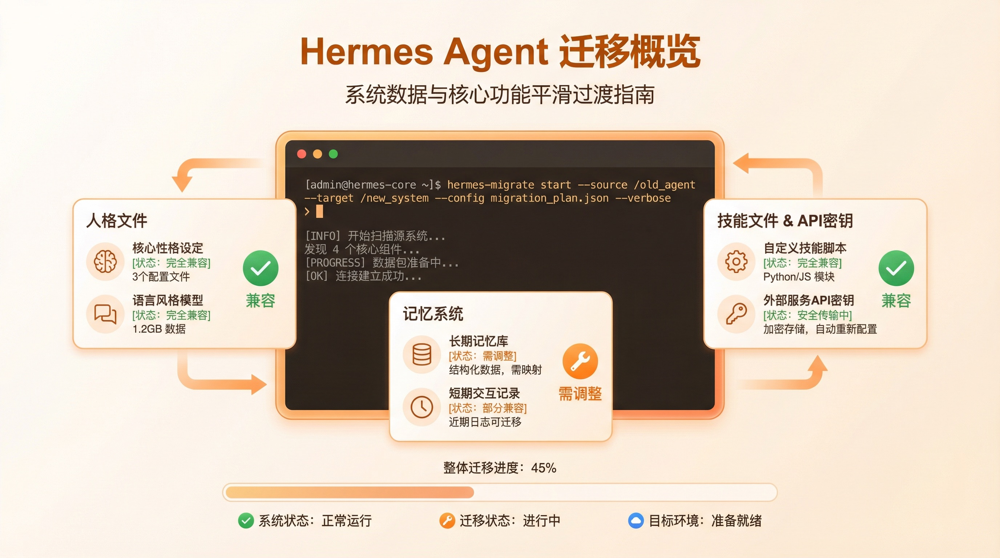
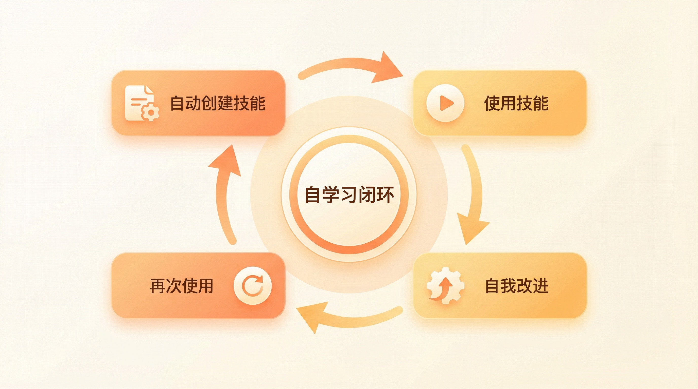
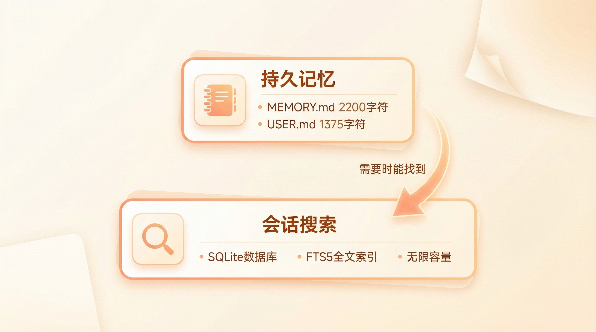
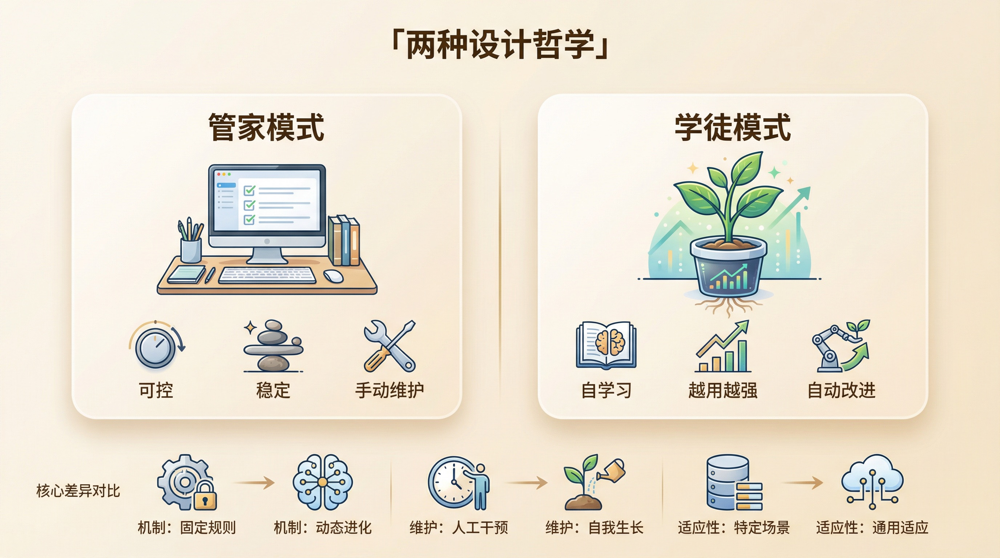
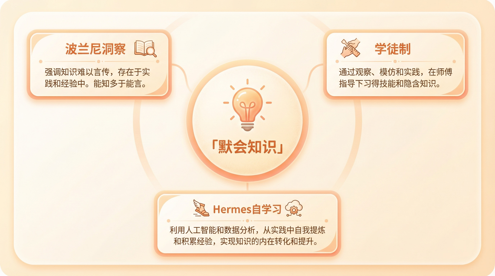

Hermes Agent 不完全指南，一个会自己长脑子的 AI Agent
上周五晚上，我在终端里敲了一行命令。
hermes claw migrate --dry-run
回车之后我就愣住了。
它检测到了我的 ~/.openclaw 目录。SOUL.md、MEMORY.md、所有自定义 Skills、API Keys，一个不落地列了出来。甚至还标注了哪些能完美迁移，哪些需要手动调。
我当时脑子里就一个想法，这是来抢人的。

Hermes Agent 是 Nous Research 做的开源 AI Agent。说真的，我之前对 Nous Research 的印象还停留在他们开源的那几个大语言模型上，没想到他们悄悄憋了个大招。
GitHub 上线 42 天，将近 4 万 Star。200 多个贡献者。这个数据放在 AI Agent 赛道里，不只是火了，是爆炸级的。
但 Star 数这东西你也知道，很多时候就是大家先 Star 了再说，真正用的人没几个。我自己是抱着「看看又是个啥」的心态开始翻它的文档的。
翻完之后我得说，这玩意确实有点东西。
它最大的卖点不是支持 15 个模型提供商，不是能在 Telegram、Discord、Slack、WhatsApp 上跑，也不是那个一行命令安装的终端 TUI 界面。这些 OpenClaw 基本也能做，或者很快就能做。
它真正不一样的地方在于一个词，自学习。

我用 OpenClaw 用了半年了。半年来我自己写了一堆 Skills，也装了不少别人的。但坦率的讲，大部分 Skills 写完就再也没更新过。不是因为它们完美，是因为我没时间维护。你知道的，一个人的精力就那么多，写文章、做项目、维护 Skills，总得排个优先级。
Hermes 不一样。它会自己创建 Skills。
怎么说呢，比如你让它帮你部署一个 Kubernetes 集群，任务完成之后，它会自动把整个解决方案提炼成一个 Skill 文件，存到 ~/.hermes/skills/ 目录里。下次遇到类似任务，直接加载这个 Skill，不用从零开始。
这还不算完。一个 Skill 被创建之后不是封存的。每次使用的时候它会记录执行结果，看看和上次有什么不同，上次方案有没有需要调整的地方，有没有新的边界条件。如果发现改进空间，它直接修改 Skill 文件。
整个过程你不需要介入。
我跟你说，这个设计才是 Hermes 的灵魂。
我们用 Agent 框架最大的痛点是什么？是你得不断手动调教它。你写一个 Skill，你得维护它。记忆系统也一样，你得告诉它什么该记什么不该记。说到底你是在养一个需要你手把手教的工具。
Hermes 把这个维护负担从人身上转移到了 Agent 自己身上。用的越多它越强，因为它经历的多。GitHub README 里写的那句话，「The agent that grows with you」，和你一起成长的 Agent。我一开始以为是营销文案，用了之后发现这还真不是文案，这是它的核心设计哲学。
回到记忆系统这块。Hermes 的记忆分两层，也是我觉得目前 Agent 记忆系统设计里最务实的方案。

第一层是 MEMORY.md 和 USER.md，和 OpenClaw 类似，但 Hermes 加了硬限制。MEMORY.md 2200 字符，USER.md 1375 字符，满了就得合并或删除。看着是约束，实际上是在逼 Agent 做信息筛选。当记忆满了，它得自己判断什么重要什么不重要。这个判断过程本身就是学习。
第二层更厉害。Session Search，所有会话存在 SQLite 数据库里，FTS5 全文索引。Agent 可以随时搜索几周前聊过的内容，即使这些不在活跃记忆里。搜索结果用 Gemini Flash 做摘要。
你想想看这是什么概念？以前的 Agent 只有两种记忆，要么在系统提示里占空间的短期记忆，要么完全找不到的远古对话。Hermes 把中间地带填上了。不是什么都记，也不是什么都不记，是「需要的时候能找到」。
还有一个让我觉得比较骚的功能。Hermes 集成了一个叫 Honcho 的用户建模引擎，Plastic Labs 做的。它用「辩证法」的方式来理解用户，不只是记录你喜欢什么，而是试图理解你为什么这样想。
比如你总是先问「有多少人用过这个工具」再做技术选型，Honcho 会学到你在意的是采用率而非技术先进性。下次它推荐工具时，会优先给你「用户量大」的选项而不是「最新最酷」的。
这个能力被嵌到了 Agent 的决策过程里。不是插件，不是可选功能，是系统级的。
说到这里，可能有人想问了，那它和 OpenClaw 到底差多少？
我用半年 OpenClaw，一周 Hermes，两个都装着。给你一个诚实的感受。
OpenClaw 的设计思路是，给你一个强大的框架，你定义人格、写 Skills、配置工具，Agent 忠实执行。你投入越多精力调教，Agent 越好用。它是一个需要你投资的系统。
Hermes 的设计思路是，给你一个能自己学习的 Agent，它从和你的交互中自动积累知识、改进技能、理解你的偏好。你用得越多它越懂你。它是一个会自己投资的系统。
没有对错。
但我自己的感受是，OpenClaw 像一个你精心调教的管家，Hermes 像一个聪明的学徒。管家更可控更可靠，学徒更有成长空间。你要哪一个？取决于你最在意什么。

如果你在意的是可控性、稳定性、微信支持、成熟的社区生态，OpenClaw 还是更稳的选择。我自己也还在摸索阶段，两个都留着，暂时不急着做选择。
如果你在意的是 Agent 能不能自己学会东西、能不能在你不维护的情况下越用越好，Hermes 值得试试。
模型切换这块差距确实挺大。OpenClaw 换模型得改配置文件，Hermes 一行 /model provider:model 命令，会话里即时切换。15 个提供商，OpenRouter 一家就有 200 多个模型。这个灵活性是碾压级的。
运行环境也是。OpenClaw 基本绑在你电脑上。Hermes 有六种终端后端，本地、Docker、SSH、Daytona、Singularity、Modal。其中 Daytona 和 Modal 支持 serverless，空闲时休眠需要时唤醒，空闲成本接近零。你可以在 5 美元一个月的 VPS 上跑它。说实话我也没搞懂怎么做到的，但文档里写得很清楚，而且有人验证过了。
当然了，它也不完美。
坦率的讲，Windows 原生不支持，得走 WSL2。迁移工具还在早期，复杂的 cron 任务和高级 Skills 配置迁移后还得手动调。2200 字符的记忆限制有时候确实太紧，用弱模型的话合并质量堪忧。文档虽然详细但组织得有点乱，新手想快速上手得翻好几个页面。
还有一个现实问题。Hermes 目前不支持微信。如果你跟我一样有微信消息平台的需求，这点得接受。社区规模也还小，agentskills.io 上的 Skills 数量远不如 ClawhHub。
不过 Hermes 的「自创建 Skills」机制在一定程度上弥补了生态不足。你不一定需要社区 Skills，因为你的 Agent 会自己造。三天用下来差异不明显，三个月之后差距会越来越大。
说了这么多，我想聊一个更深的东西。
英国哲学家迈克尔·波兰尼提过一个概念叫「默会知识」。他说「我们所知道的比我们能说出来的多得多」。骑自行车的人不需要解释怎么保持平衡，厨师不需要精确到克就能调出好味道。这些知识不是从教科书上学来的，是从一次次的实践中长出来的。

以前的 Agent 框架，不管是 OpenClaw 还是别的，说到底都在尝试把所有知识都「说出来」写进 SKILL.md。你写得越详细，Agent 越好用。但问题是，很多知识你写不出来。你不知道自己知道什么，直到你做了那件事才发现「哦原来这样可以」。
Hermes 的自学习闭环做的就是把这种「默会知识」的获取方式搬到了 Agent 身上。不是你教它，是它自己从经验里学。它做了什么、什么失败了、怎么修复的、有没有可复用的模式。这些都是在做的过程中自然产生的知识。
人类几千年的学徒制不就是这样的吗？师傅不写教材，徒弟跟着做。做的过程中自然就学会了。不是被教的，是长出来的。
Hermes 是第一个认真尝试把这个模式做进 Agent 框架里的项目。
我相信 OpenClaw 很快也会有类似的能力。这场竞争才刚开始。但 Hermes 的方向，我始终坚信，更接近 Agent 的终局。当 Agent 的能力越来越强、任务越来越复杂时，靠人手动维护 Skills 和记忆是不可持续的。Agent 必须学会自我管理，自己决定学什么、忘什么、改进什么。
如果你现在就想体验一下「会自己长脑子的 Agent」，Hermes 值得一试。
回到开头那个命令。hermes claw migrate --dry-run。
它不只是一个迁移工具。它是 Nous Research 在对 OpenClaw 用户说，我们已经帮你铺好了搬家的路。你来不来，你自己决定。
相关链接
- Hermes Agent 官网，https://hermes-agent.nousresearch.com/
- GitHub 仓库，https://github.com/NousResearch/Hermes-Agent
- Skills Hub，https://agentskills.io
- 文档站，https://hermes-agent.nousresearch.com/docs/
- Discord 社区，https://discord.gg/NousResearch